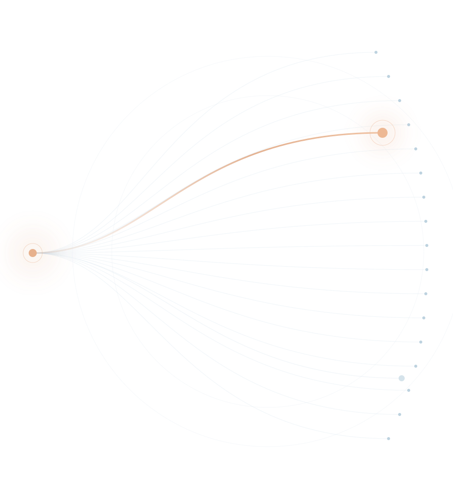

LENS · AN OBSERVATORY OF MODEL BEHAVIOR
知微之门Five paths. One field of inquiry.
LENS.知微SEE THE PATTERNS WITHIN

01 — RESEARCH QUESTION
What shapes
a model’s answer?
The task stays fixed. The conditions do not.
-
ExpressionHow the answer is formedDifferent prompt strategies, same task and settings.
-
EvidenceWhere the answer is foundWhich sources, positions, and context are used.
-
FeedbackHow a draft is repairedWhat changes the model makes after feedback.
248,586real responses. One connected research space.
02 — COLLECTION DESIGN
How can we isolate each effect?
One condition at a time.
03 — DATA PIPELINE
What can we trust?
Keep the record. Keep the distinction.
04 — DATA LANDSCAPE
What repeats across tasks?
31 prompts. No single prompt tells the whole story.
05 — CORE FINDINGS
Where do patterns turn?
2 low-dimensional · 2 multidimensional · 1 anomaly